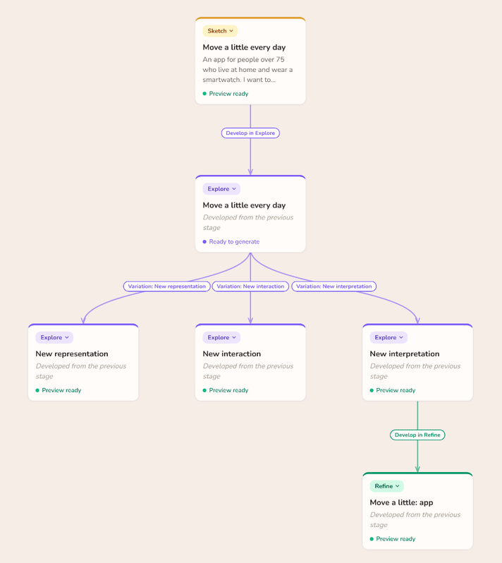
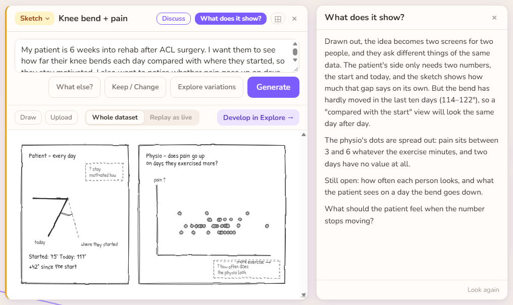
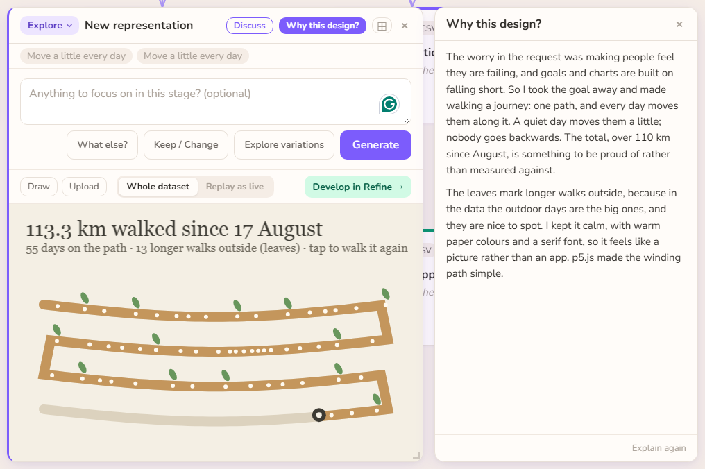
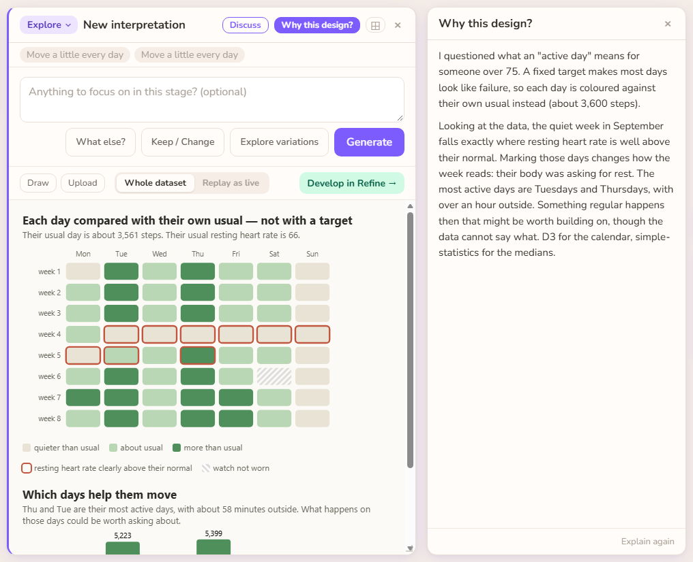
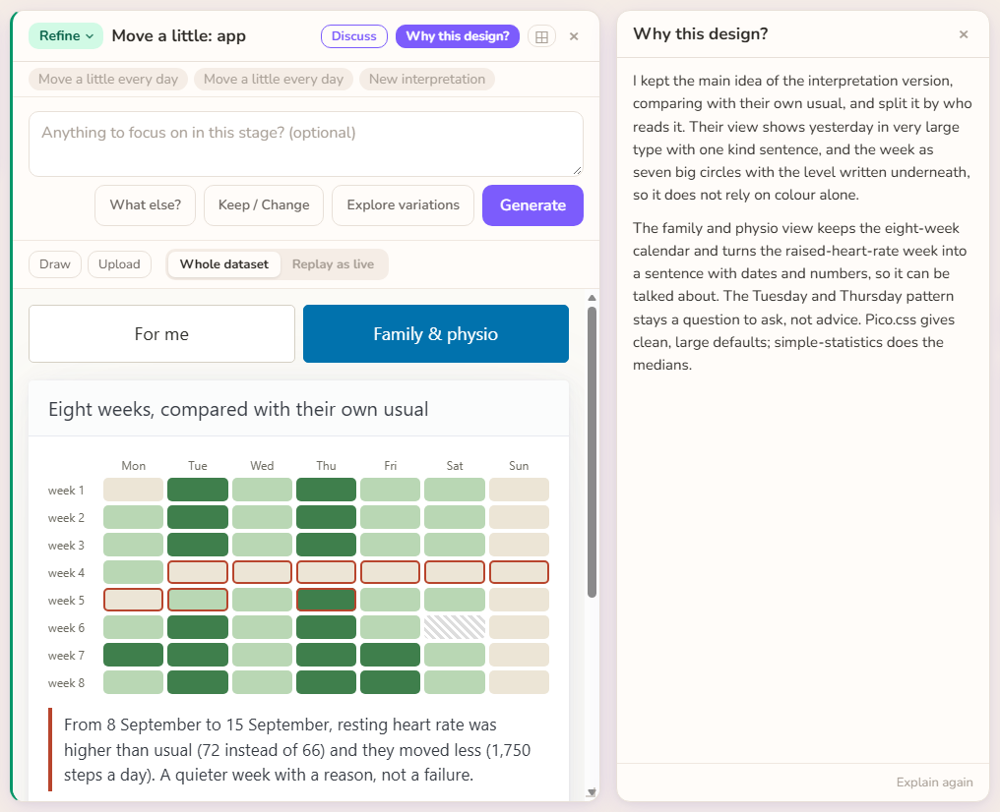

BioSketch
An LLM-programming tool for non-linear, slow design exploration with biodata
- Context
- M.Sc. thesis in Human–Computer Interaction (15 hp), then Research Assistant work, Department of Informatics, Umeå University, 2026
- Supervisor
- Dr. Pedro Sanches
- Methods
- Human–AI co-creation sessions, think-aloud protocols, artifact analysis
- Output
- Full paper submitted to Nordes 2027 (under review)
- Code
- github.com/leonelligabriele-ops/design_exploration_AI
The exploration tree
Most AI coding tools are one long chat: each new answer overwrites the last app, and the design converges on the first idea. In BioSketch every idea is a card on a canvas, with its own running prototype. New ideas branch from old ones, so the whole exploration stays visible as a tree. You can go back to any branch, compare alternatives side by side, and keep several directions open at once.

How this tree grew:
- Sketch The idea: an app for people over 75 who live at home and wear a smartwatch. It should encourage them to move a little every day without making them feel judged. It must be very simple, and family or a physiotherapist may look at it too. The AI answers with a rough, hand-drawn-looking prototype.
- Explore Develop in Explore moves the idea up one level, from “what could this be?” to “which way could it go?”.
- Explore variations branches it three ways:
- a new representation: walking as a journey along one path, where every day moves them forward;
- a new interaction: one big button, “How did I do yesterday?”, that answers aloud;
- a new interpretation: each day compared with their own usual, not a target, so an unwell week reads as rest, not failure.
- Refine The interpretation branch is developed into a near-final app with a “For me” view and a “Family & physio” view. The other branches stay on the canvas.
The live tree is the real BioSketch interface in demo mode. Click any card to open its prototype, which runs on synthetic data, and its “Why this design?” explanation. You can also branch new ideas yourself. Without an AI connected, new cards get placeholder output. The example prototypes were written by hand, following the exact prompts BioSketch sends, to show typical output.
Moves for branching
Each card offers moves that open the design up instead of narrowing it down:
- Explore variations branches three new versions of an idea side by side, for example a new representation, interaction or interpretation of the data.
- Develop takes an idea up one level, from Sketch to Explore to Refine, as a new card. The earlier card stays as it was. Each level asks the AI for a different fidelity, from rough to polished.
- Combine merges two or more cards, even from different branches, into one new idea.
- Generate lets you describe an idea, or what to change, in words or with a drawing.
Inside the cards






Working with biodata
Prototypes run on real bodily data, not mock-ups. A CSV file, a webcam (pose tracking with MediaPipe) or a Bluetooth sensor streams into every card on the tree at once, so all branches can be compared on the same data. The AI explains its design choices, and a discussion panel lets people question them. Every prompt is recorded, and a session can be exported as one readable file, which makes the tool usable as a research instrument.
The study
For my M.Sc. thesis, I studied how experts and non-experts use BioSketch to come up with and prototype biodata applications. I ran human–AI co-creation sessions with think-aloud protocols and analysed the prototypes people made.
As a Research Assistant with Dr. Pedro Sanches, I extended the dataset and analysis into a full paper. It shows how participants and LLMs make sense of biodata through metaphor, how frictions between their metaphors expose biases, and how ideas emerge as they are re-articulated. It argues for critical attention to LLM-assisted coding when it is applied to bodies and health.